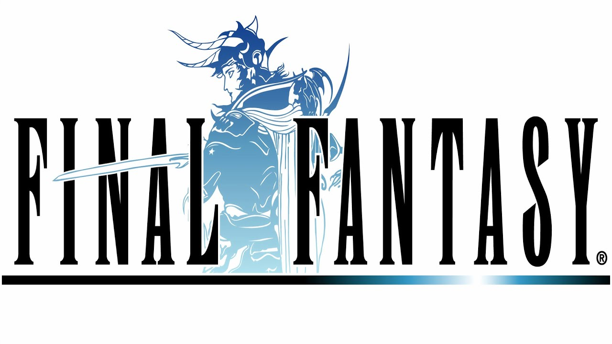
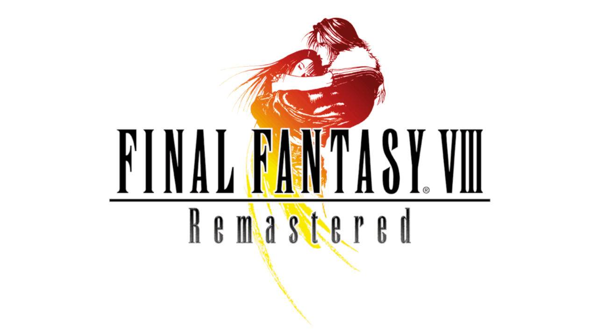

Final Fantasy (ファイナルファンタジー Fainaru Fantajī?) é uma série de jogos virtuais de ficção científica e fantasia criada por Hironobu Sakaguchi e desenvolvida pela Square Enix. É centrada em uma série de jogos eletrônicos do gênero RPG. O primeiro título da série foi Final Fantasy, lançado em 1987 e criado por Sakaguchi como seu último trabalho na indústria; o jogo acabou sendo um grande sucesso e gerou várias sequências. A série de jogos desde então se diversificou também em outros gêneros como RPG tático, RPG de ação, MMORPG, corrida, tiro em terceira pessoa, luta, ritmo e animes.
O Final Fantasy VII Remake é um tour de force absoluto: é satisfatoriamente longo, conta uma história fascinante, ostenta jogabilidade às vezes desafiadora, mas sempre agradável, e parece absolutamente fantástico. É tão épico como você esperaria que um remake de um dos jogos mais amados de sempre seria. Se você é um fã de Final Fantasy, é um acéfalo de uma compra, mas isso também se aplica a praticamente qualquer um que gosta de se perder por um longo período em um mundo de fantasia totalmente sedutora, lindamente trabalhada com uma barriga escura..
Todos os "Final Fantasies" são lineares, ninguém duvida disso. Mas ao chegar no décimo jogo da franquia, a Square Enix fez questão de deixar isso bem evidente, extirpando de vez o World Map, repetindo essa fórmula no décimo segundo e no décimo terceiro jogo da franquia. O problema de Final Fantasy XIII é que ele elevou esse nível de linearidade ao extremo, tirando inclusive as cidades do jogo, os NPCs, as sidequests, etc. E acabou transformando a sua jornada em uma enfadonha linha reta, com nada além da história a seguir.
Vincent é um homem fisicamente em seus vinte e tantos anos. Ele tem olhos vermelhos e cabelo longo. Ele usa uma bandana vermelha com sua franja emergente sobre ela. Característica mais distintiva de Vincent é seu manto vermelho, mantido sobre seus ombros e a parte inferior do rosto por várias fivelas. Debaixo de sua capa tem um traje preto com várias tiras e fivelas. Vincent usa um coldre para sua arma na sua perna direita. Ele usa uma luva de ouro em seu braço esquerdo. Sua arma é a Cerberus, um revólver de três canos..
Antes de ser possuído pelo ódio, Sephiroth não tinha interesse em fama e glória. E apesar de manter todos os traços de sua personalidade, o vilão se torna mais perigoso, implacável e cruel, se demonstrando um sádico ao torturar Cloud. Ele acaba desenvolvendo um complexo de Messias, dizendo que é o escolhido e que guiará o planeta a salvação, em nome de Jenova.
Listamos agora um TOP 10 com os games da série principal de Final Fantasy, excluindo spin-offs e outros jogos variados. A lista é composta pelos títulos mais populares e queridos entre os fãs. Não quer dizer, claro, que você não possa discordar e apontar o seu próprio favorito.
Depois de anos de rumores, especulações e pedidos desesperados, eis que a Square-Enix atendeu ao chamado. Durante a conferência da Sony na E3 2015, foi apresentado um trailer que provocou reações nunca antes vistas na feira de jogos. inal Fantasy VII Remake foi anunciado e vai acontecer. Na apresentação antes do trailer, tudo parecia se encaminhar: um jogo lançado há vários anos e que era muito querido pela comunidade, lém de ter revolucionado a indústria. Em seguida, o clássico escorregador
Final Fantasy VII está deslumbrante nos gráficos apresentados no trailer, mas o vídeo acaba logo quando Cloud surge, de costas. Tetsuya Nomura será o diretor — e não havia nome melhor para assumir um projeto tão importante. Ele é designer de personagens da franquia desde Final Fantasy V, além de trabalhar no desenvolvimento de games da saga Kingdom Hearts.
Fonte: https://www.tecmundo.com.br/e3-2015/81552-final-fantasy-vii-remake-anunciado-explode-cabecas-e3-video.htm